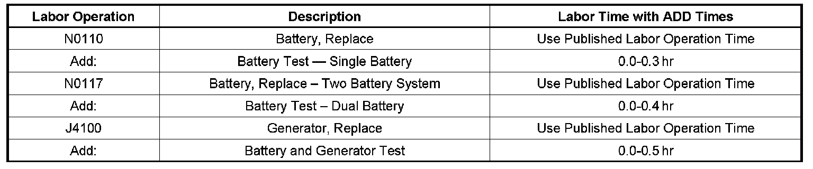

Battery/Charging System - Electrical Diagnostics Info.
INFORMATIONBulletin No.: 05-06-03-002C
Date: April 17, 2008
Subject:
Battery and Charging System Electrical Diagnostics
Models:
1997-2009 GM Passenger Cars and Trucks
2003-2009 HUMMER H2
2006-2009 HUMMER H3
EXCEPT Electric Vehicles and Hybrid Truck
Attention:
This bulletin does not apply to Saturn and Saab models.
Supercede:
This bulletin is being revised to add model years. Please discard Corporate Bulletin Number 05-06-03-002B (Section 06 - Engine/Propulsion System).
Changing Diagnostic Strategy
The previous electrical diagnostic worksheet provided in GM Corporate Bulletin Numbers 02-06-03-006B, 02-06-03-011 and 02-06-03-012 is no longer required when diagnosing battery and charging system concerns.
Battery and charging system diagnostic information provided by these bulletins has been incorporated into SI and the printed Service Manuals for 2007 model year and later vehicles.
New Information on Electrical Diagnosis
Specific electrical diagnostics are available for each vehicle line in SI. Please refer to Engine Electrical Diagnostics within Engine Electrical.
New Labor Times for Battery and Generator Diagnostics
With the deletion of the previously required electrical diagnostic worksheet, the ADD time allowances for the following labor operations have been revised. The warranty chart below updates the ADD conditions for the following labor operation numbers. These times are effective immediately.
Warranty Information

For vehicles repaired under warranty, use the table.

Disclaimer